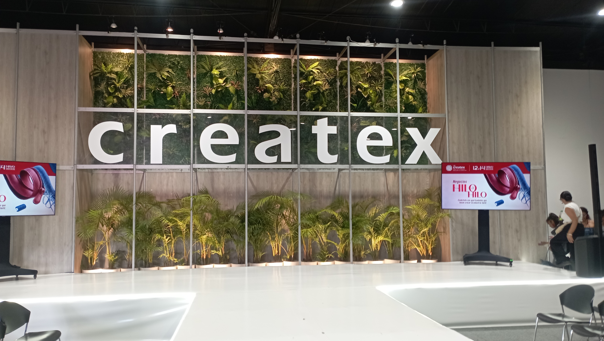
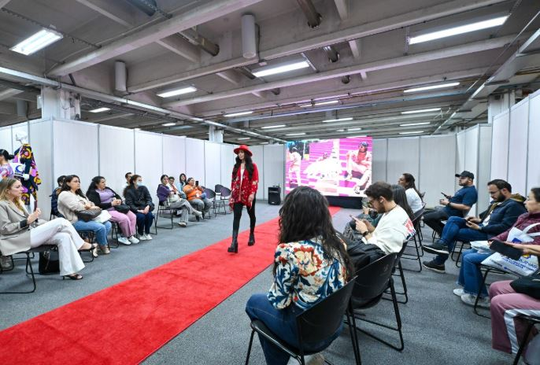
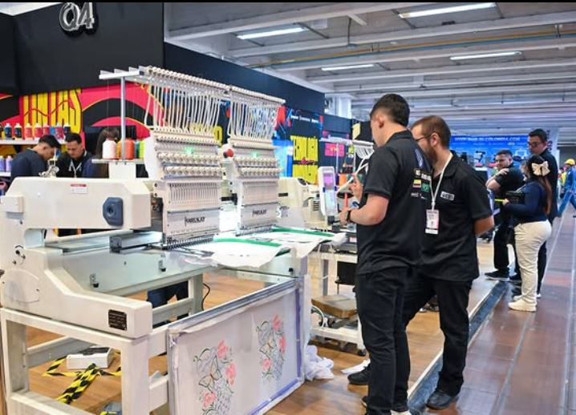
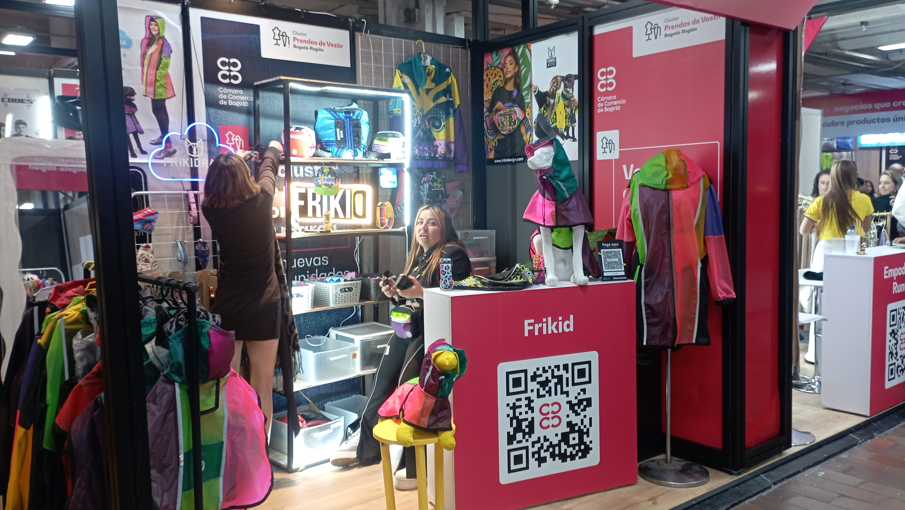

Asistir a Createx 2026 no se trata solo de ver prendas terminadas, sino de entender cómo se construye la moda desde el hilo. En su octava edición en Corferias, la feria consolidó a Bogotá como el epicentro de la cadena de suministro del país. Esta experiencia me dejó claro que el verdadero motor de la industria textil está en la tecnología y la optimización de los procesos.

El auge del Sportswear y el fenómeno global
Una de las sorpresas más grandes del evento fue el protagonismo absoluto de la ropa deportiva. Con el mercado de sportswear disparado y la cercanía de la Copa Mundial 2026, las marcas locales están apostando fuertemente por textiles de alto rendimiento. Pude ver de primera mano innovaciones en procesos de sublimación y tecnologías de estampación avanzada orientadas a tendencias masivas como el blokecore.

Maquinaria, DTF y Automatización
Para los creadores y confeccionistas, el corazón del evento estuvo en las demostraciones en vivo de impresión industrial. La tecnología de impresión directa a film (DTF) avanzada y los sistemas de bordado automatizado prometen democratizar la producción, permitiendo que marcas emergentes compitan en calidad con grandes superficies.

Createx 2026 me demostró que para diseñar el futuro de la moda no basta con tener una buena idea estética; es obligatorio aliarse con la técnica y el desarrollo sostenible. El sistema moda colombiano está más fuerte, integrado y automatizado que nunca.

Y mucho más.